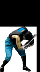
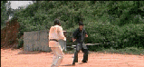

Ki
 De: La Frikipedia, la enciclopedia extremadamente seria.
De: La Frikipedia, la enciclopedia extremadamente seria.
| De la serie Elementos químicos:
|
|
|
| Nombre oficial:
|
Ki (en japonés), Chi (en chino)
|
| Otros nombres:
|
Ki, Qi, Chi, Prana, Pneuma, Energía, La Fuerza... ¡pero Chakra no!, ¡eso es erróneo!
|
| Serie alquímica:
|
Alquimia Taoísta
|
| Descubridor:
|
Lao Tse
|
| Color en tabla:
|
Rojo, Naranja, Amarillo, Verde, Azul, Índigo, Violeta, Plateado, Dorado, Blanco, Negro, y del que quieras.
|
| Presente en:
|
todo el universo
|
| Usos:
|
Tai Chi Chuan, Chi Kung, Meditación, Reiki, Kamehameha, etc.
|
| Estado:
|
Socialista (porque está regulado por el Gobierno Chino)
|
| Peso kg/puñao:
|
no tiene, porque no es físico, es abstracto (pero una Genki Dama pesa como 100.000 KiloTones!!)
|
| Estructura:
|
según la forma que se le dé, puede ser una bola de energía, un rayo de energía, o una transformación de Supersaiyan
|
| Abstracción:
|
Es abstracto, ya lo dije antes.
|
| Humungoso:
|
No, no es tangible, es volátil.
|
氣, 気, 기, mas conocido como Ki es un concepto de la filosofía oriental que se refiere a una Energía inmaterial pero natural presente en todo el universo y consecuentemente en todos los seres vivos, que permite tanto el desarrollo en armonía de esas formas de vida como también la muerte y destrucción de esas vidas mediante la acumulación y propulsión de Ki en forma de rayos laser y ataques explosivos similares a bombas nucleares que los guerreros de distintas facciones pueden utilizar canalizando el Ki para desarrollar técnicas de ataque y matarse los unos a los otros apelando a la "espiritualidad", "armonía", y demás principios benévolos y filosóficos con los que pretenden lograr la paz mundial matando a puño limpio a todos sus adversarios.
Historia
Según cuenta la leyenda, el sabio chino Lao-Tse se encontraba meditando bajo un árbol de ciruelo, cuando en derrepente alcanzó la Iluminación y desbloqueó todos sus meridianos, los cuales son los canales energéticos por los cuales fluye el Chi, y desde entonces su energía comenzó a fluir libremente sanándole todas las enfermedades venéreas que tenía, fortaleciendo todos sus músculos, esclareciendo su mente para hacerlo mas sabio de lo que ya era, y agrandándole su Dragón para hacerlo mas fuerte y mas poderoso que cualquier humano ordinario. Así Lao-Tse se dio cuenta de que existía una energía que no se podía ver, ni tocar, ni oler, ni oír, ni degustar, pero que si la aprendías a usar podías ponerte duro durante mas de 8 horas y podías retener la eyaculación para satisfacer a cualquier puta sin acabar antes de lo que se necesita, y por lo tanto una energía así de eficaz por mas que no pueda verse ni tocarse igual es súper efectiva y merece ser estudiada !.
Desde entonces, Lao-Tse se la pasó follando meditando todos los días, todo el día, hasta llegar a la conclusión de que la energía Chi era la forma en la que se manifestaba el Tao: aquél principio filosófico descubierto por el susodicho sabio, y que viene a ser el origen de todas las cosas pero sin ser un ente espiritual ni religioso, porque viene a demostrar que en realidad Dios no existe, porque de hecho en el universo existen cosas mas poderosas que Dios, como por ejemplo el pollón de Lao-Tse el Ki.
El origen cósmico del Ki
Lao-Tse decidió que debía dejar sus descubrimientos escritos en un manual de Alquimia Taoísta, pero como no tenía ganas de ponerse a escribir el clásico manuscrito El Secreto de la Flor de Oro porque era un libro muy extenso, entonces dejó esa tarea para que otros la completen por él mas adelante en el futuro, y él mas bien se dedicó a escribir un libro mas pequeño y escueto, porque seguro tenía muchas cosas mas importantes que hacer que sentarse meses enteros a escribir libros pesados y apelmazados.
Así, el libro que escribió finalmente Lao-Tse fue el Tao Te King, que pasó a la historia tras obtener el Record Guinness como el primer libro de 81 capítulos donde cada capítulo es solo un párrafo y nada mas, y precisamente en su Capítulo 42 del "Tao Te King", Lao Tse habla del Chi y dice:

|
El Tao engendra a la Unidad,
La Unidad engendra a la Dualidad,
La Dualidad engendra a la Tríada.
La Tríada engendra a los diez mil seres.
Los diez mil seres llevan el Yin en sus espaldas y el Yang en sus frentes,
Y la armonía de su Chi depende del equilibrio de estas dos fuerzas.
|

|
| Tao Te King, Capítulo 42
|

El
Yin-Yang es el movimiento del cosmos, que como vemos ésa cosmodinamia se mueve en forma de
69.
Bueno... si lo que Lao-Tse quería era explicarnos todo sobre el Chi y enseñarnos como usarlo, con ésto nos cagó bastante porque no se entiende un Cosmos, donde parece que primero solo existía el Tao, así que como estaba solo engendró a una Unidad, que seguramente eran una unidad élite de la Guardia Roja de Yin y Yang, el famoso símbolo taoísta de los dos renacuajos haciendo el mapa diseminándose por Hong Kong y lavar los platos en Chi Kung, también meditación, y demás técnicas milenarias del cultivo del Ki que Buda y Bruce Lee aprendieron cuando fueron discípulos de Lao-Tse, y que su Maestro les enseñó para que luego ellos le enseñen todos sus conocimientos a la humanidad, y por eso como vemos en éste cuento chino épico parece que el Tao Te King consigue explicarnos el origen de la cosmología universal en base al Tao, y su consecuente creación del Ki y su impacto en el mundo, solo con esas cuatro o seis frasecillas cursis e incomprensibles que suenan tan bonito y confunden bastante.
Los nombres del Ki
Dada su difusión mundial, el Chi, Ki, o como se llame... como podrás ver tuvo distintos nombres según cada lugar en el que fue acogido (dije "acogido", no "Confucio) con respecto a los nombres de esta energía inexistentematerial, aunque en realidad no son veinte tipos de energías distintas como dicen esos estúpidos del New Age, sino que en realidad solo la misma mierda de energía Ki, pero con distinto nombre:
Aunque no lo parezca,
Lao-Tse Muten Roshi es un experto en el arte de manipular el Ki.
- Chi: El nombre original de ésta energía, que le fue puesto por el mismísimo Lao-Tse cuando la descubrió. Dado que Lao-Tse era chino y hablaba chino, naturalmente ésta fue la denominación original para ésta energía, y por eso a su país se le puso el nombre de Chi-Na.
- Ki: El nombre mas popular de ésta energía. Es el mismo Chi de Lao-Tse pero nombrado en idioma japonés, porque fue hecho mundialmente famoso por el guerrero nippon Son Goku, que desarrolló la habilidad de manipular el Ki para lanzar ataques de energía como el Kamehameha y aumentar el flujo de Ki en su cuerpo para elevar sus niveles de poder y transformarse en Supersaiyan, habilidad que comparte con Vegeta, Gohan, Goten, Trunks, Sonic, Shadow, Silver, y otros personajes tan ficticios como Dios.

Buda usó su
Prana para transformarse en
Supersaiyan y momificarse en un
baño de
oro sólido hecho con su propia Energía.
- Qi: Nombre chino simplificado del Chi, para todos los otakus que no aprendieron bien el idioma chino porque se la pasaron leyendo manga y viendo anime creyendo erróneamente que los poderes de energía son originarios de Japón, cuando en realidad el 90% del patrimonio cultural japonés es de origen chino y fue exportado por Mao, quien envió a sus monjes Shaolin a introducir el budismo y el comunismo en Japón, donde el primero pegó bastante pero el segundo parece que no le fue tan bien que digamos...
- Prana: Sigue siendo el Chi de siempre, pero en idioma sánscrito, porque cuando Big Brother, y muchas Deepak Chopra ni por Sai Baba, porque esos hijos de puta nomás hablan de espiritualidad para ganar millones de dolares, y por eso no saben usar el Ki/Chi/Prana como sí hacían Lao-Tse, Bruce Lee, Buda, etc.
- Pneuma: Nombre griego del Ki, que fue traducido por Sócrates cuando estudió bajo la tutela de Lao-Tse, del cual fue también su discípulo y fue de él quien aprendió todo sobre el cultivo del Chi y sobre los conocimientos filosóficos, los cuales Sócrates luego llevó a Grecia para iluminar a los europeos supersticiosos que hasta entonces solo le rezaban a Zeus, a Poseidón, o a Zorba el Griego. Fue así como Sócrates introdujo la filosofía en occidente, porque primero la aprendió en oriente de la mano de Lao-Tse, pero erróneamente todos los occidentales estúpidos creen que la Grecia Antigua fue la cuna de la filosofía cuando en realidad la Antigua China fue la que dió origen al pensamiento filosófico, y los griegos nomás empezaron a pensar solamente porque Sócrates introdujo las importaciones filosóficas del Chi del cual había aprendido en el Tao Te King de Lao-Tse.
- Cosmoenergía: También llamado simplemente Cosmos, la Cosmoenergía es el nombre que le dan en Saint Seiya al Ki, ya que tenían que usar un nombre genérico para todos los idiomas porque en el orfanato donde estaba Seiya había niñatos de todo el mundo: Shiryu era de China, Seiya de Japón, Hyoga era de Finlandia, y Shun era gay, así que todos hablaban distintos idiomas y no era justo usar el nombre del Ki en un solo idioma, así que para no dejar desconforme a nadie nomás inventaron una palabra en esperanto para el Ki, y esa palabra fue CosmoEnergía, porque al cabo que según decía en el Tao Te King de Lao-Tse el Chi era una Energía que estaba en todo el universo, o sea, en el Cosmos, así que el nombre le sirvió bien a Ikki y a Mu de Aries para lanzar ataques de energía y matarse los unos a los otros usando la energía cósmica de las estrellas como fuente de poder, tanto para hacerse mas poderosos como para hacerse mas bonitos, porque convengamos que todos los personajes de esta saga son sospechosamente metrosexuales.
- La Fuerza: Es el nombre que le dió Marclar y Na'vi) y por eso no fue muy preciso con las palabras a la hora de hacer una traducción exactamente literal, así que usando el traductor de Google terminó traduciendo "Energía" como "Fuerza", obviamente influenciado por los conocimientos de Física que tenía, pero que no eran tan avanzados como los de Stephen Hawking y por eso Yoda no entendía la diferencia entre "Energía", "Fuerza", "Trabajo", y demás conceptos fundamentales de la física moderna. Así, cuando Yoda fundó la Orden Jedi, le dijo a todos sus Padawans que lo que había aprendido de Lao-Tse era La Fuerza, y desde entonces eso fue lo que George Lucas retrató en todas sus películas biográficas y documentales históricos basados en la vida real de estos personajes.
Ki que no son Ki
Debido al uso masivo e indiscriminado del término, surgieron muchas teorías y conceptos intrincados que afirman que la Energía Ki es espiritual, o que es un Dios, o que Dios usaba el Ki, o que el Ki creó a Dios, o que otros dioses y otras energías son el equivalente al Ki, y demás chorradas de esas que dicen Nueva Era que siempre estafan a la gente haciendoles creer que saben de conocimientos antiguos cuando en realidad nunca en sus putas vidas estudiaron la filosofía oriental verdadera y genuina, y por eso La Frikipedia tiene el deber de iluminar a las masas alienadas del proletariado y enseñarles el conocimiento verdadero como corresponde:

Diagrama del cultivo del
Ki en base al
Yin y Yang ubicado en el
Hara; Nótese que en ningún momento me refiero a ésto como "Chakra", porque ¡¡nada de esto se llama Chakra!!
- Chakra: El Chakra no es sinónimo de Ki; solo son puntos o vórtices de energía específicos en distintas partes del cuerpo, en los cuales hay Ki, pero no es correcto creer que toda la energía se llama "Chakra", solo cada puntito de mierda de ésos se llama Chakra, y de hecho solo los indios le dicen "Chakra", así que todos los idiotas que creen que el "Chakra" es una energía similar al Ki o que es un nombre del Ki usado por los japoneses, pues están totalmente equivocados; esas son solo las patrañas y chorradas de la serie Naruto, que como vemos el imbécil que la creó no sabe una mierda sobre energía, Ki, filosofía oriental, etc, y por eso emplea mal los términos y le pone el nombre de un vórtice hindú a toda una energía china, y desde entonces todos los narutards se han pasado la vida desperdiciando el tiempo en tratar de usar el "Chakra" para caminar por el agua o aprender ninjutsu, cuando si tuvieran algo de conocimiento se darían cuenta de que "usar chakra para caminar sobre el agua y aprender ninjutsu" sería como usar un único punto del cuerpo para caminar sobre el agua y aprender ninjutsu, lo cual es claramente un claro claso de Idiotitis Aguda
- Psi: La energía psíquica por excelencia. El Psi es la energía usada para la telekinesis, telepatía, levitación, teletransportación, y demás poderes psíquicos erróneamente rotulados como "psicokinesis son los Nina Kulagina, Irina Spalko, Rosa Luxemburgo, León Trotsky, y demás Leninistas expertos en poderes psicokinéticos, y por lo tanto está probado científicamente y con el método científico del Socialismo Científico que los fenómenos Psi-Kappa no son paranormales y son naturales porque vienen de lo profundo de la psique, y por eso no son nada espirituales y cualquier ateo puede aprenderlos, y de hecho aunque los ateos también puedan aprender a usar el Ki eso no significa que Ki y Psi sean lo mismo, porque el Psi viene del cerebro y el Ki viene del Tao, y el Tao es... bueno, no se que es, pero hace falta un cerebro muy grande para entender conceptos ontológicos tan complejos como ése!

Yamcha aumentó su Ki para transformarse en
Supersaiyajin, y por eso ahora su cabello y su aura se volvieron dorados.
- Aura: Muchos estúpidos creen que aura y ki son sinónimos, pero no es así. El Kirlian, que no es lo mismo que las fotos que mira neuronas es lo que genera fluctuaciones en el campo áurico haciendolo mas variable, incluso alternando sus colores (por ejemplo, cuando miras porno del internet el campo áurico que rodea tus genitales se pone al rojo vivo!!!), pero no se trata de lo mismo que el Ki, y de última ni el Ki ni el Aura son sinónimo de "Alma", porque como sabemos el alma no existe y solo es un truco usado por las religiones para asustarte y decirte que tu alma arderá en el infierno si no obedeces todos los dogmas de la religión, en cambio el Aura y el Ki no tienen dogmas, ni infierno, ni nada, así que cualquier comunista ateo tiene un aura y puede aprender a usar el Ki para matar a todos los curas con ataques de energía roja.
 Los chinos también inventaron la magia, que en realidad ellos dicen que es
Alquimia Taoísta, ya que la magia no existe porque es solo una "Ilusión".
- Magia: Otra confusión habitual es creer que la Mago Enmascarado que reveló todos los trucos de Penn & Teller que revelaron sus propios trucos con tal de tener un punto de rating en su programa de duendes, hadas, unicornios, y cualquier estupidez infantil que ven en el Disney Channel, y por eso no hay nada que compruebe la existencia de la magia ni que indique que magia y Ki son equivalentes, sino mas bien todo lo contrario.
Mai sería mas fácil creer en su existencia... ¡y todo el mundo la adoraría!
- Eywa: Desde que el desgraciado hijo de p... James Cameron sacó su película Eywa". En realidad el Eywanismo es una religión sincrética y adulterada provista de tergiversaciones enajenadoras (o sea, como todas las religiones del mundo) donde todos los nuevos adeptos creen que encontraron una nueva creencia, cuando en realidad "Eywa" es el mismo concepto de "Kennedy, y tantos otros líderes sectarios del neoliberalismo que le imponen a las masas su Culto a la Personalidad en devoción y adoración a su ser (y luego vienen a criticar a los comunistas diciendo que ellos imponen el "culto a la personalidad"... ¡pero si los capitalistas hacen eso todo el tiempo!). Pos por eso Eywa no es el Ki; porque aunque esté presente en todo el universo y en la naturaleza al igual que el Ki, la diferencia es que el Ki no es espiritual y es natural, no es un ser ni tiene culto a la personalidad, en cambio Eywa sí, y por eso el Ki es anarquista pero Eywa es pastafarista.
- Dios: La peor comparación que se puede hacer con el Ki es decir que el Ki es Dios. Muchos líderes sectarios, como Conny Mendez, Raël, Li Hongzhi, Deepak Chopra, Claudio María Dominguez y Sixto Paz Wells gustan de decir sandeces y chorradas varias como del tipo "Dios, Jesús, Buda, el Ki, la Kabbalah, los Extraterrestres y los Duendes son todo lo mismo"... ERROR!!!!, El Ki no es "el equivalente oriental a Dios", porque el Ki no es un ser, no es una entidad, no tiene conciencia o voluntad, no es de origen divino, ni espiritual, ni sobrenatural, ni prohibe el aborto, ni la homosexualidad, ni apoya la monogamia, ni la pedofilia, ni cobra el diezmo, ni ninguna de las características típicas de la religión, y por lo tanto es falso que el Ki sea uno de esos fenómenos paranormales; mas bien el Ki fue usado por Lao-Tse, Bruce Lee, Son Goku, Naruto Uzumaki, Seiya, Mao Tse-Tung, Kim Jong-Il, y demás guerreros taoístas y comunistas expertos en artes marciales que siempre han luchado por la emancipación del proletariado y han peleado contra los invasores imperialistas que quieren dominar el mundo, en cambio "Dios" no es una fuerza que pueda ser "manipulada" por los hombres para luchar contra la burguesía, mas bien al contrario, los hombres manipulan al proletariado haciendoles creer en Dios para que no luchen contra la burguesía y se queden en el conservadurismo del capitalismo por toda la eternidad, y por eso Dios y el Ki no son sinónimos, sino antagónicos, porque Dios es servil al capitalismo y el Ki en cambio le sirve al Marxismo.
Cultivo de Ki

Lao-Tse en meditación profunda para cultivar el Ki, mientras el viento le vuela la barba para que parezca mas místico.
Para desarrollar el Ki es necesario una conducta impecable como la de un Monje Shaolin o un Guerrero Wudang. Se necesita disciplinar el cuerpo y la mente en un conjunto del cual no puedan discociarse, siguiendo un estricto régimen de pulcritud y dedicación plena a la práctica del cultivo, elevación y almacenaje de Energía.
Para ésto es necesario llevar a cabo una buena alimentación sana, comer todos los grupos alimenticios, escasa o nula ingesta de grasas trans, no escuchar Reality Shows; no malgastar tu vida en un gimnasio o un bar donde siempre te intoxican el cuerpo con anabólicos y etanol; nada de alcohol ni cigarrillos; nada de consumir drogas, no tener sexo con prostitutas... en fin, parece que es algo mas difícl de lo que esperabas, y por eso la mayoría de las personas estúpidas de la sociedad posmoderna y neoliberal nunca logran alcanzar la Iluminación y ni siquiera pueden hacer una bola de Ki visible porque prefieren alienarse con estupideces y distracciones en vez de dedicarse al noble arte de la cultivación de la Energía.
Si eres uno de los pocos que no se distraen con basura enajenadora entonces eres apto para desarrollar el control del Ki: siéntate en Postura de Loto; medita todos los días, desapégate de todas tus posesiones materiales y dámelas a mí también de todas tus creencias y prejuicios preconcebidos; libera tu mente y desecha toda la mierda que te habían enseñado desde pequeño tanto en tu casa y en la escuela, como en el catecismo o en el club con tus amigos... manda todo a la mierda y vuelvete tan ermitaño y analítico como Sheldon Cooper y el Dr. House; y así serás libre para pensar lo que se te dé la gana en vez de aceptar dogmáticamente los dogmas sociales de la sociedad de consumo establecida... y ya que tengas la mente libre entonces ahora llénala... llénala de Ki !!!
Archivo:Mai Shiranui.gif Para que el Ki fluya libremente es importante caminar todos los días con una postura firme, para que los pulmones usen toda su capacidad de oxigenación y se llenen bien de aire... como los pulmones de ella!!!
Siente esa sensación cálida ahí dentro tuyo, cerca del Hara, Tan-Tien, o como carajo se le diga a ese gran núcleo de Energía que tienes en el abdomen... siente su calor... disemínalo por todo tu cuerpo... pero ojo, no enfoques demasiado calor "ahí abajo" que tu "amiguito" podría despertarse y si se pone muy cachondo perderás la concentración y mandarás al carajo la meditación por querer distraerte haciendo cosas mas divertidas; pero mantén la compostura y recuerda que ese camino ya lo conoces y no conduce a ningún lado (solo te saldrán callos en las manos, pero no aprenderás a dominar el Ki).
Si resististe la tentación y lograste enfocarte en la energía de tu abdomen (y no en tus genitales) entonces trata de hacer mas fuerte esa sensación de energía, y expándela por todo el cuerpo tratando de que sea uniforme y haya la misma energía en todos lados... al mismo tiempo... cada vez mas fuerte... ¡¡¡eres pura energía!!!....
...Ahora ve a comprar mas pastillas de LSD porque el efecto de ésta ya se acabó, y luego de diez o veinte "viajes" mas como éste, estarás lo suficientemente flipado como para ver esferas de energía saliendo de tus manos.
Tipos de Ki
Además del Ki propiamente dicho que es energía y ya, existen subtipos de energía ki según sea necesario para cada caso. A continuación le hecharemos un vistazo a estas variedades de Ki, que parece que hay para todos los gustos:
- Shin Ki: Es el Ki Benigno utilizado por los santos taoístas, los santos budistas, los santos cheondoístas, los santos shintoístas, los santos de Atena, y casi cualquier santo a excepción de los santos católicos, ya que como sabemos la Hotei (no confundir con Hentai), que es el "Buda Sonriente" que otorga regalos a los niños para robarle el puesto a Santa Claus, y siempre está alegrando el decorado de los restaurantes chinos con alguna estatua suya, en las que siempre lo vemos gordito y feliz poque está impregnado de energía de luz... pero no dudaría en darte de patá en los cojones y lanzarte rayos de Shin Ki para destruírte si te atreves a hablar mal del Partido Comunista Chino, y de su "Socialismo de Mercado" que es tan contradictorio como la "paz y amor" de los tipos éstos que se la dan de benévolos y después te cagan a trompadas.
- Gou Ki: Es el Ki Maligno utilizado por los adoradores de Metafísica Cristiana, la Secta Moon, la secta de los Raëlianos, la secta Falun Gong, la secta del Budismo Tibetano, la secta de los Movimentarios, los Akuma, que odia a los buenazos santurrones y a los sectarios diabólicos por igual, ya que considera que un verdadero Gouki debe ser ateo y anarquista, y por eso Akuma se cambio el nombre a Gouki como para dejar en claro que él es el único Gouki verdadero, y reparte ostias contra los hinduístas tipo Dhalsim y los dictadores tipo Bison por igual, porque él odia a todos sin discriminar a nadie.
Mikao Usui, el
Sensei que inventó el Reiki
- Rei Ki: Uno de los mas famosos de todos. Se trata de la combinación del Rei o "Energía Universal", con el Ki, la "Energía Vital" de la que estamos hablando, dando como resultado una "Energía Vital y Universal" o ReiKi, que antiguamente los chinos usaban para curar a los enfermos pero cerca del siglo XIX Mikao Usui decidió cambiarle el nombre por uno japonés y le puso Reiki, y desde entonces lo usó para seguir currando enfermos pero tuvo la mala idea de enseñarle ésto a los oxidentales, que como son unos Lamaísmo no tiene nada que ver con el Reiki japonés verdadero, y al Dalai Lama como vemos no habría que considerarlo como un "Iluminado" porque es mucho mas facho de lo que parece.
Zenki en plena actividad, y parece que el
Zen no lo hace "puro como un monje" como se esperaría...
- Zen Ki: El estado del Ki cuando alcanza el Satori, o sea, el nombre que se le da a la Iluminación según la tradición Zen. Como sabemos el Zen fue introducido a Japón gracias a los monjes Shaolin, que caminaban en patas como Kwai Chang Caine y así cruzaron caminando el Mar del Japón caminando sobre el agua gracias a la habilidad de llevar el Ki hasta las plantas de los pies para no hundirse, y cuando llegaron a Japón empezaron a hablar en chino y nadie les entendía, y por eso cuando los Shao
Kahn Lin dijeron que enseñarían el Budismo Ch'an para cultivar el Chi, entrar en armonía con el Tao, y alcanzar el Ming; los japoneses entendieron todo distinto y desde entonces los nippones enseñan el Budismo Zen para cultivar el Ki, entrar en armonía con el Do, y alcanzar el Satori; que como vemos es la misma mierda con distinto olor, que de todas formas siempre sirve para hecharse un polvo una meditación y bajar los niveles de stress, bajar las pulsaciones cardíacas, bajar la presión arterial, y bajar el colesterol (que no sabemos si es verdad que el colesterol baja, porque al parecer Buda con la buzarda que tenía seguro que le llegaba el colesterol hasta las nubes).
NOTA: En chino en vez de decir Zen Ki se diría Tao Chi, pero eso lo confundiría con el Tai Chi y por eso esa terminología no se usa. Además seguro que te importa un carajo como se dice en chino, en japonés, o en otros idiomas, y por eso este mensaje aparece solo como una nota en letras pequeñas, porque a nadie le interesa leerlo.
Técnicas de Ki
Se pueden hacer innumerables ataques de energía utilizando el Ki, pero como un listado de todos los ataques sería muy largo como para hacer un libro, tons pa' resumir aquí ponemos nomás los ataques mas relevantes:
- Hadoken: La mas fundamental de las técnicas de ataque con Ki. Consiste en
hacer una "U" con el pad direccional hacia adelante y presionar el botón de puño juntar las manos a la altura de las muñecas pero dejando separadas y distanciadas la zona de los dedos, imitando lo que serían las fauces de un bola de energía visible y luego que la tienes puedes aventársela por la cabeza a cualquiera que te joda, hasta que su barra de energía llegue hasta donde dice "K.O." y entonces ahí sí ya lo cagaste. Existen diversos tipos de Hadoken que pueden hacerse practicando distintas variantes, como lo son Shakunetsu Hadoken, Shinku Hadoken, Gou Hadoken, Messatsu Gou Hadoken, Zanku Hadoken, Denjin Hadoken, y básicamente cualquier combinación que en definitiva siempre es la misma mierda con distinto olor, pero con variedad de colores para elegir o con poderes de cool y así encontentar a todos los Buenrollistas y <font. color="#0000FF">neo</font>hippies.
Estatua del Rey Hawaiiano Kamehameha, haciendo el Kamehameha.
- Kamehameha: Hawaii antes de que fueran conquistadas por los Muten Roshi (versión japonesa de Lao-Tse, igual de barbón pero mas guarro el viejo verde), el cual se la enseñó a Son Goku, el cual se la enseñó a Son Gohan, y el cual se la enseñó a Son Pan, y así hasta que Dragon Ball GT llegó a su fin y ya no hubo mas oportunidades de usar ésta técnica. Básicamente consiste en un enorme haz de energía que sale de las manos. Al igual que el Hadoken de Street Fighter, pones las manos con forma de fauces de dragón y haces una bola de energía, pero en vez de disparar las bolas de energía a ésta mas bien la tienes en la mano y desde ésa bola se dispara un chorrazo de
lefa Ki que sale a mil por hora y en el extremo tiene algo así como lo que sería un hongo atómico, y por eso la forma del KameHameHa es algo mas o menos así: 8==================================================================================D

Se necesitan tres
Santos de Atena para hacer una
Genki Dama.
- Genki Dama: Otra técnica de Dragon Ball, que sirve para destruir una ciudad completa tipo París, Londres, Roma, o cualquiera de esas grandes capitales burguesas. Los gringos de mierda le llaman Spirit Bomb, o sea, "Bomba Espiritual", lo que es una traducción pésima porque no solamente el Ki no es espiritual como ya se dijo antes, sino que además Genki Dama viene a significar algo así como Bola de Energía, así que eso de "Bomba Espiritual" es una chorrada inventada por estos yankis de mierda que no saben ni papas sobre filosofía oriental y siempre ven todo según el punto de vista dogmático de la religión occidental. Por esta razón a los asiáticos les da mucha rabia que los yonkis de occidente no sepan ni traducir sus palabras, y por eso diseñaron ésta técnica que viene a ser como una bola de Reiki donde coges
a tu hermana la energía de todos los seres vivos a tu alrededor para formar una bomba atómica capaz de devastar todo a su paso, y por éso ésta es la técnica favorita del Líder Supremo Kim Jong-Il, quien la aprendió a la perfección para defender a Corea del Norte de la amenaza imperialista de USA, y por eso si después de 2012 se desata la tercera guerra mundial entonces los norcoreanos van a vencer a los yankees con técnicas como ésta.

Ejemplo de Ki a la enésima potencia
- Super Transformación: Esta técnica requiere del aumento del ki a niveles insospechados, porque en vez de lanzar un ataque de Ki lo que harás es cargarte todo de energía para volverte mucho mas musculoso, mas rápido, mas fuerte, mas ágil, mas flexible, mas duro, y mas polludo. Con la transformación de OTAN e infiltrarte en el ginseng norcoreano con algo de LSD para alucinar con el cabello dorado y el aura brillante, pero recuerda que los efectos y superpoderes se van rápido si no entrenas todos los días para acostumbrarte, y si lograste la transformación ingiriendo 7 pastillas de éxtasis de colores, entonces perderás tu Super Forma en solo 50 segundos a no ser que comas unas argollas doradas similares al anillo de Frodo.
Otras funciones del Ki
- Luchar contra Bruce Lee (no recomendado)
- Derrotar Enfermedades (Cancer, SIDA, H1N1, Depresión, Acné, Menstruación, Amor, etc.)
- Matar a Steve Jobs (misión cumplida)
- Matar a Bill Gates (tarea pendiente)
- Hacerse Super Saiyan (Solo Goku & Jesus)
- Ganar Carreras y Maratones (solo Sonic & Knuckles)
- Resistir el Hambre (en África no funcionó U_U)
- Soportar el Stress (pero si te estresas demasiado no podrás ni meditar !)
- Hacer la Fusión Metamoru (solo Gogeta y Gotenks)
Además el Ki sirve no solo para curar enfermedades y lanzar ataques de energía, sino también para fortalecer el cuerpo y hacer mas eficiente su desempeño físico; lo cual es muy útil a la hora de practicar artes marciales y usar el ki para golpear mas duro y soportar golpes mas fuertes; o también para tener Beijing 2008 los atletas chinos arrasaron con todos los premios?
Los viejos siempre usaban
viagra para ponerse bien duros...pero con el Ki se ponen mil veces mas duros!!!
De todas formas no se recomienda empezar con el ki a los mayores de 70 años, porque sus meridianos ya están contraídos y si sufren una sobrecarga de energía pueden terminar perdiendo el control de sus esfínteres, lo cual es una forma sutil de decir que mojarán sus pantalones, y por eso siempre es mejor aprender a meditar, a pelear, y a pensar practicar con Ki a una edad temprana, mas o menos desde los 5 años cuando a todos los chiquillos estúpidos los sientan a ver a Barney o a los Teletubbies, y por eso sus mentes se atrofian desde pequeños y ya cuando crecen y entran en la adolescencia se convierten en emos, floggers, canis, pijos, y demás tribus urbanas de pendejos estúpidos que no tienen nada en la cabeza y no saben nada de la vida, y por eso cuando ya se vuelven adultos se convierten en meros esclavos del sistema que aceptan dogmáticamente el status quo de la sociedad establecida sin cuestionar nada y votan lo que la tele y la radio les dicen que voten, creen en la religión que la mayoría dicen que deben creer, y odian a las minorías políticas, minorías sexuales, y minorías religiosas solo porque el status quo les dice que a esos deben odiarlos... y todo ese conservadurismo irracional es por culpa de que no entrenaron con energía Ki desde pequeños, que si lo hubieran hecho entonces ahora no serían tan gilipollas y con la meditación se habrían vuelto mas sabios y con el ki serían autosuficientes y poderosos como un Supersaiyan.
Factores a evitar a la hora de trabajar con Ki

Ejemplo de Ki Maligno en acción
Broly también es un experto en el uso del Ki Maligno...
El Ki se desarmoniza si no entrenas con él, y si entrenas todos los días y tienes un ki armonizado y potenciado, aún así corres el riesgo de estar expuesto a factores que lo desarmonizan y constituyen un peligro para la acupuntura para que te restauren el flujo de Chi a la normalidad.
He aquí los agentes nocivos y corrosivos que perjudican al Ki y te causan enfermedades, o como ellos mismos se autodenominan; Enemigos del Ki:
AVISO: La exposición e influencia a todos estos agentes patógenos pueden desarmonizar tu Ki y causarte enfermedades crónicas como el Trastorno disocial pasivo-agresivo esquizotípico narcisista histriónico obsesivo-compulsivo paranoide de la personalidad por evitación psicologicamente sano, así que si quieres mantener tu salud y tu Ki en óptimas condiciones, renuncia a todas esas porquerías para siempre!!!
Famosos expertos en el manejo del Ki
 Bruce Lee nos enseña que el Ki puede usarse para hacer mas fuerte las técncias de
Kung Fu, como su famoso
Golpe De Una Pulgada (en los
huevos) *~*
- Maestros Legendarios del Ki
Éste es un intento de Super Transformación exitoso...
Éste es otro intento fallido de transformarse en Super Saiyan (o debería decir Super Seiya)
Con las 7 Bolas del Dragón Esmeraldas Caos puedes emular el poder del Ki de forma artificial... pero no es lo mismo...
Ésta Kitsune no se transforma en Supersaiyan y solo tiene poderes pirokinéticos... ¡pero a quien le importa!
...Y lo logró!, Se transformó en Super Saiyajin!!!...
...Y ahora puede lanzar el Super KameHameHa con total facilidad!!!
Ki-Adi-Mundi es obviamente el Jedi Master que mas sabe sobre el Ki, ¿o por qué crees que se llama así?...
...Pero obviamente Yoda es el que le enseñó todo sobre La Fuerza...
... Y éste H.D.P. es el que sabe todo sobre el Lado Oscuro!!!
Chun-Li observa, y como vemos ella ya usó Ki para transformarse en Supersaiyajin.
Y aquí lo vemos meditando al Anciano Filósofo, usando su Ki para levitar.
Con el Ki puedes hacer la Fusión Metamoru, tal como hicieron Goku & Vegeta...
El Meteoro Pegaso tiene una CosmoEnergía de puta madre...
...Y Saga es un Hijo de su Puta Madre!!!
Pero Akuma es el Gouki mas poderoso, y con su Satsui-No-Hadou va a destrozar a todos los Bisexuales de Atena.
Enlaces Energéticos
Véase también
Autor(es):
- Mad Max
- 62666
- Genericool
- Axelaxel12
- Edarcox
- RACO
- Generibot
- Mr. Troll
- Burnamy
- ElPutasBoy
Frikipedia 2005-2016, Licencia
GFDL 1.2 - Extraído por FrikiLeaks